PETA UGM
Klik pada gedung yang ingin anda ketahui
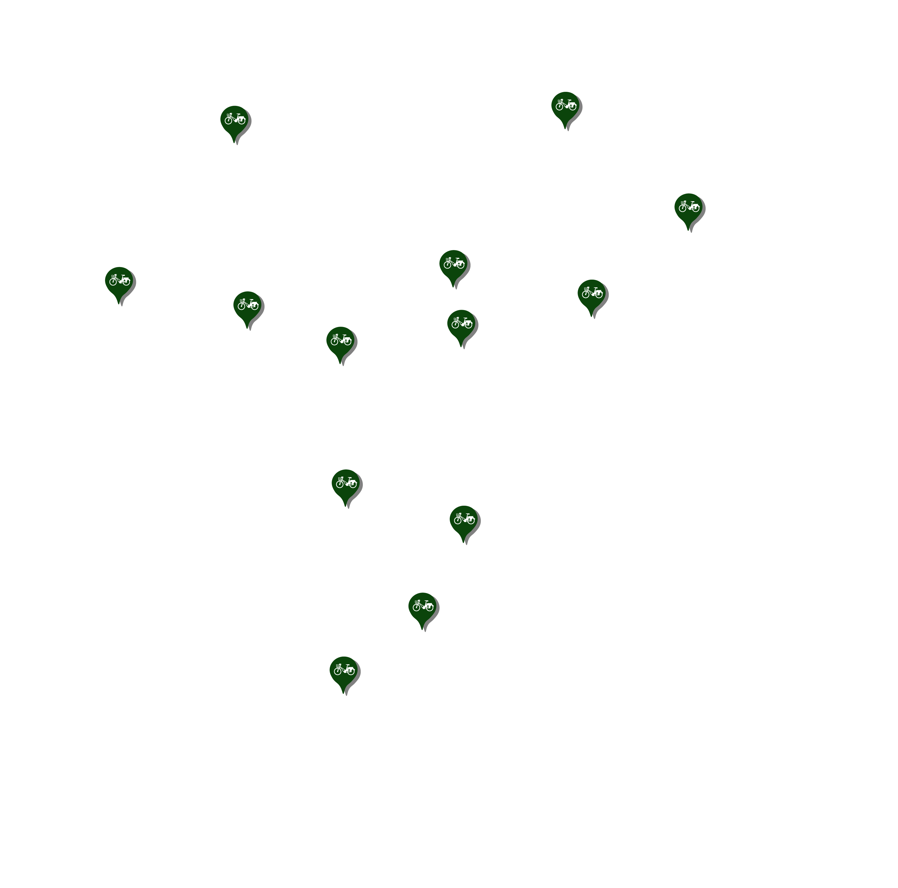 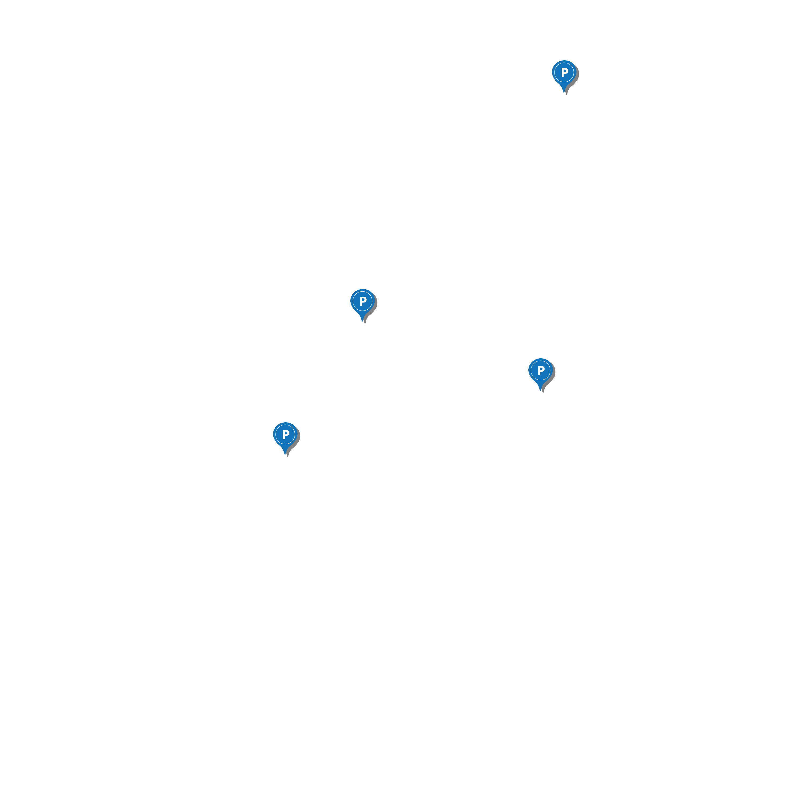
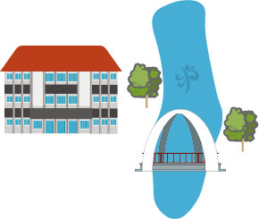
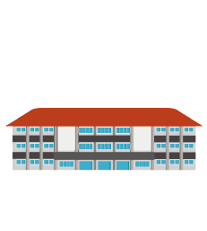
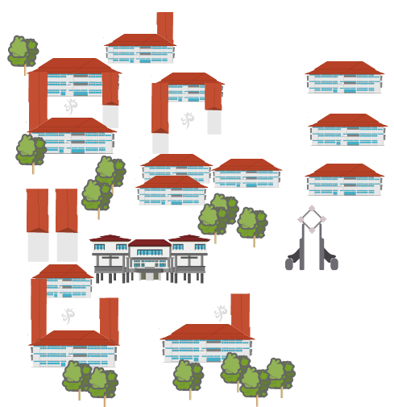
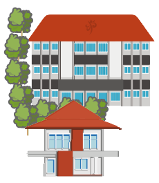
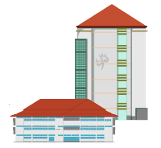
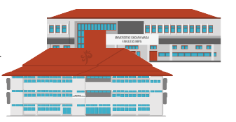
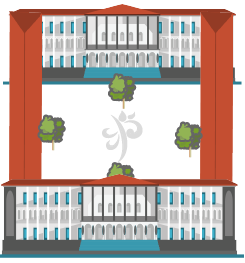
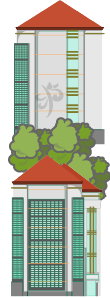
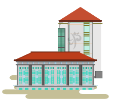
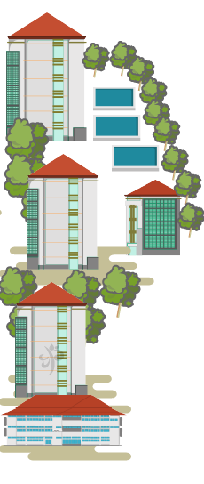
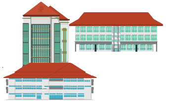
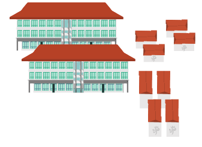
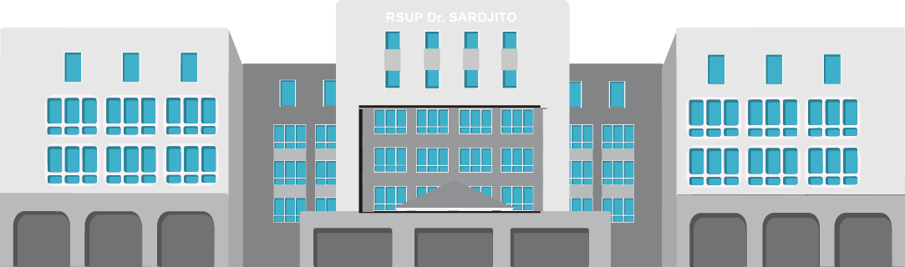
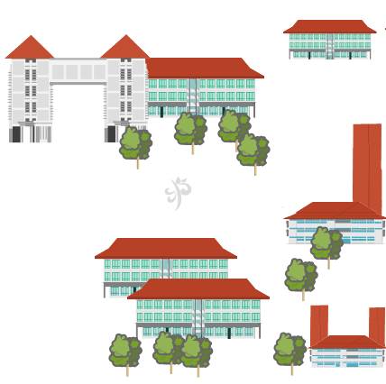
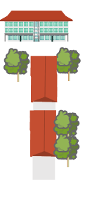
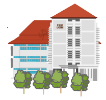
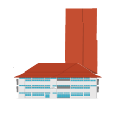
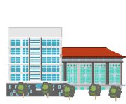
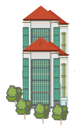
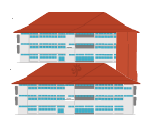
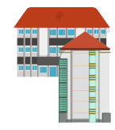
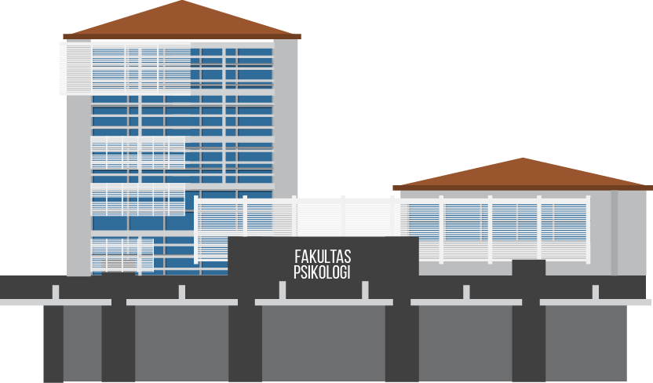
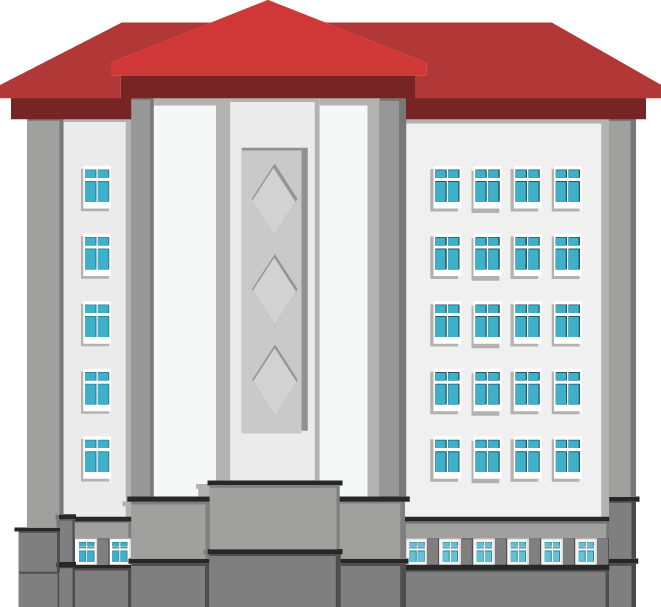
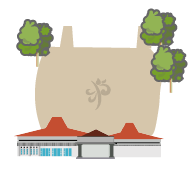
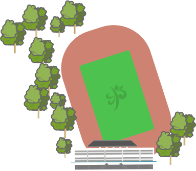
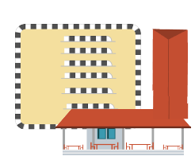
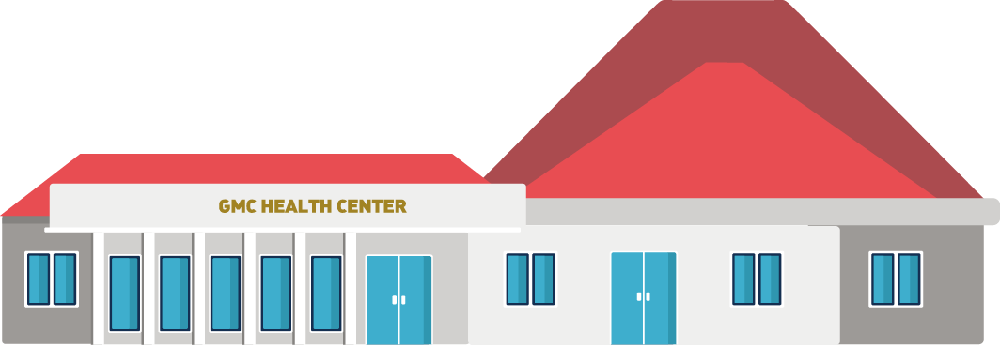
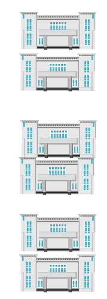
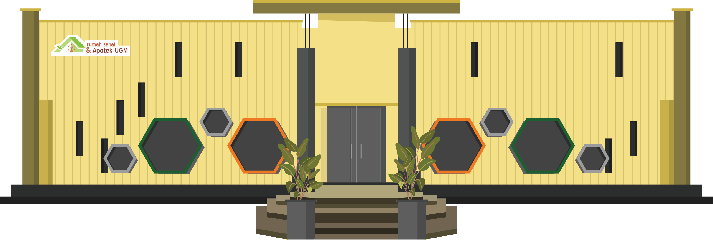
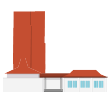
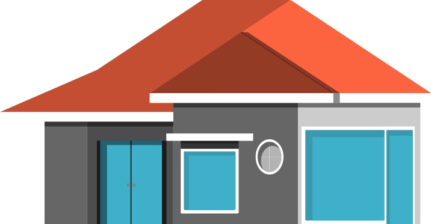
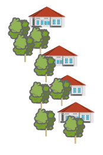
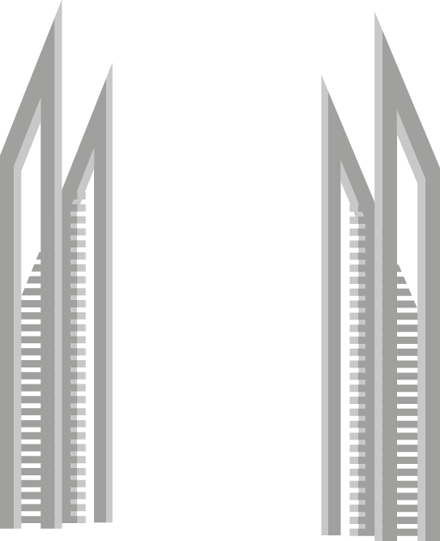
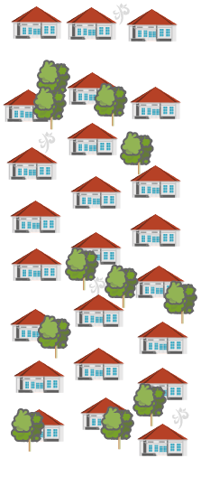
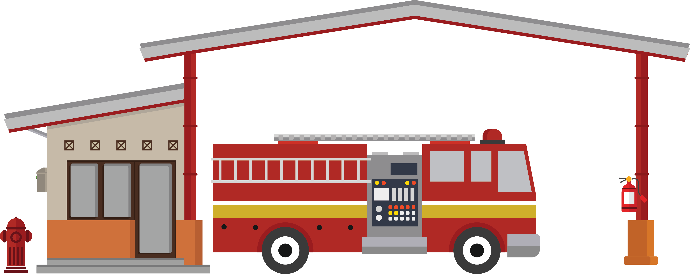
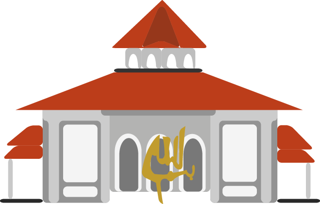
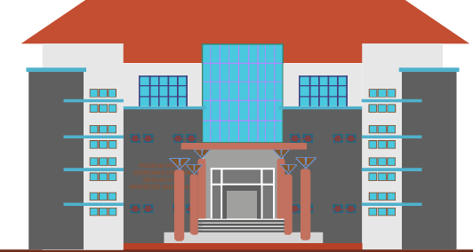
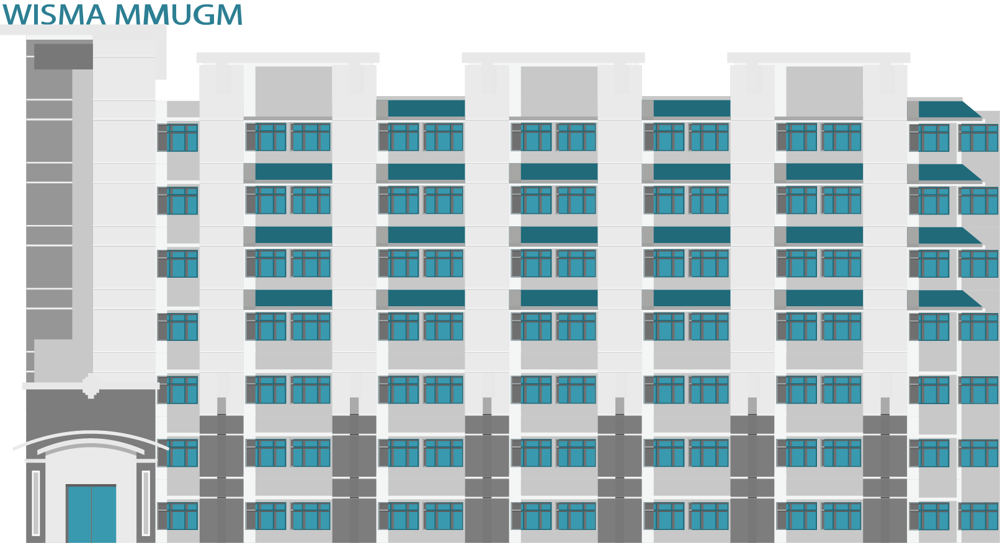
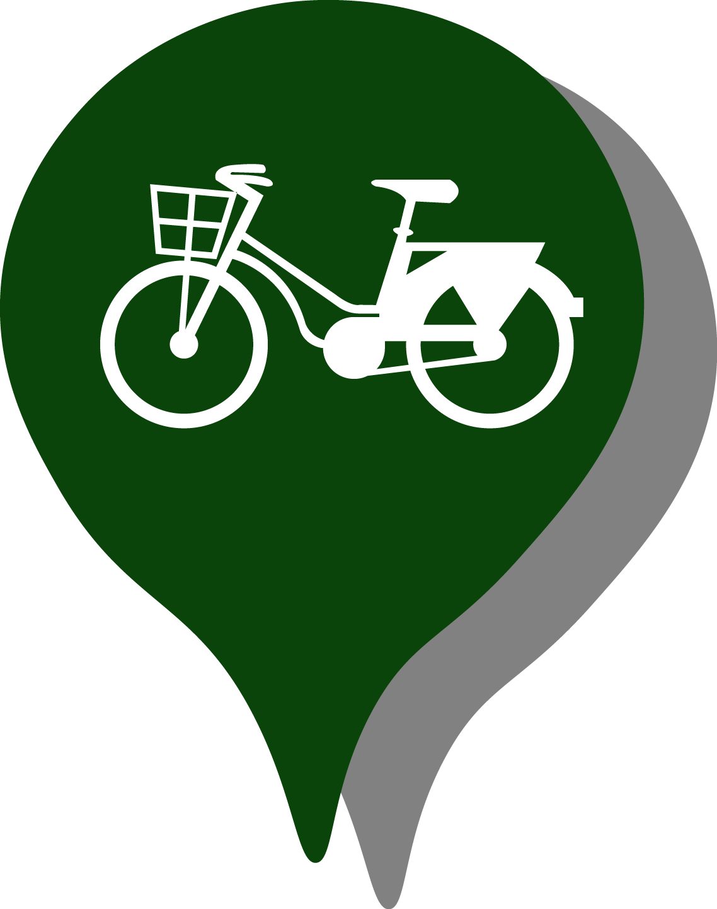
Sepeda Kampus
Kantong Parkir
PK4L
×
Sepeda Kampus
Klik tombol ini terlebih dahulu untuk melihat gedung yang lain
×
Kantong Parkir
Klik tombol ini terlebih dahulu untuk melihat gedung yang lain
×
PK4L
Klik tombol ini
terlebih dahulu untuk melihat gedung yang lain
 terlebih dahulu untuk melihat gedung yang lain
terlebih dahulu untuk melihat gedung yang lain
-01.png)